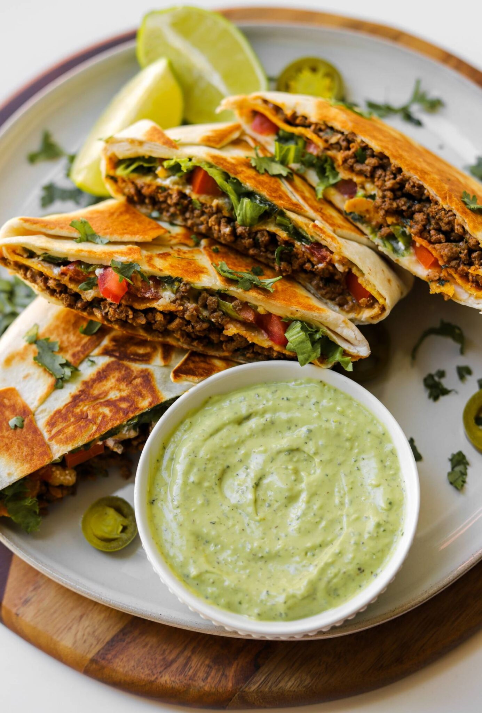

TACO BELL CRUNCHWRAP SUPREME

Description
If you love Taco Bell’s Crunchwrap Supreme, you can now make it at home and even better! They’re so easy to whip up and perfect to freeze and reheat for another day.
Ingridients
Taco Meat
- 1 pound ground beef 85/15
- 1 tablespoon olive oil
- 2 teaspoons minced garlic
- 2 teaspoons chili powder
- 1 teaspoon coriander
- 1 teaspoon salt or to taste
- 1 teaspoon smoked paprika
- 1 teaspoon cumin
- 1 teaspoon oregano
- 1/2 teaspoon black pepper
- 1/4 teaspoon onion powder
- 2 tablespoons tomato sauce
- 1 tablespoon cilantro chopped
Crunchwrap Filling
- shredded lettuce
- chopped tomatoes
- large flour tortillas
- tostadas
- sour cream
- nacho cheese
- shredded Mexican cheese blend
- oil or mayonnaise for toasting
Steps
Taco Meat
- In a pan over medium heat, add olive oil and garlic and cook until golden.
- Then add ground beef to the pan along with all the taco spices (chili powder, coriander, salt, smoked paprika, cumin, oregano, black pepper, and onion powder) and start to mash with a spatula or wooden spoon to break up completely.
- Once the meat is browned and minced finely, add tomato sauce and cilantro. Mix and take off heat. Allow to cool slightly for a few minutes.
Assembly
- Grab a large flour tortilla and spread some nacho cheese in the center. Add the taco meat on top.
- Layer a tostada on top of the meat. Spread sour cream on top of the tostada.
- Add the lettuce, tomatoes, and shredded cheese on top.
- Cut out a small circle from a large tortilla and place on top.
- Wrap and seal the Crunchwrap.
- Brush the crunchwrap with a bit of oil/mayo or oil the pan and place folded side down first. Toast on both sides to golden brown perfection and enjoy.
See more recipes